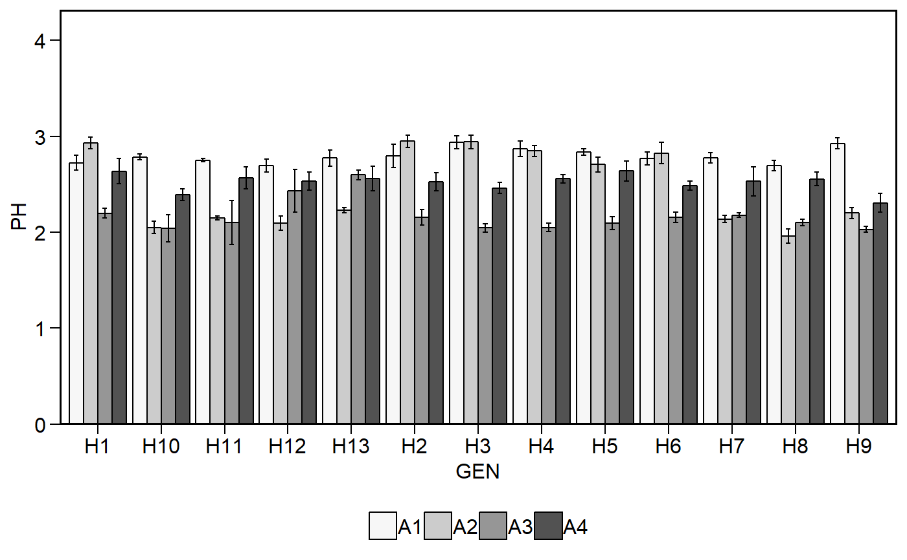

Create a bar plot based on categorical (one or two) variables and one numeric variable.
plot_factbars( .data, ..., resp, y.expand = 1, y.breaks = waiver(), xlab = NULL, ylab = NULL, lab.bar = NULL, lab.bar.hjust = 0.5, lab.bar.vjust = -0.5, lab.bar.angle = 0, size.text.bar = 5, lab.x.hjust = 0.5, lab.x.vjust = 1, lab.x.angle = 0, errorbar = TRUE, stat.erbar = "se", width.erbar = 0.3, level = 0.95, invert = FALSE, col = TRUE, palette = "Spectral", width.bar = 0.9, legend.position = "bottom", size.text = 12, fontfam = "sans", na.rm = TRUE, verbose = FALSE )
| .data | The data set |
|---|---|
| ... | A comma-separated list of unquoted variable names. Must be up to two variables. |
| resp | The response variable |
| y.expand | A multiplication factor to expand the y axis.. Defaults to 1. |
| y.breaks | The breaks to be plotted in the y-axis. Defaults to waiver().
|
| xlab | The x label |
| ylab | The y label |
| lab.bar | A vector of characters to show in each bar. Defaults to NULL. |
| lab.bar.hjust, lab.bar.vjust | The horizontal and vertical adjust for the labels in the bar. Defaults to 0.5 and -0.5, respectively. |
| lab.bar.angle | The angle for the labels in the plot. Defaults to 0. Use
in combination with |
| size.text.bar | The size of the text in the bar labels. |
| lab.x.hjust, lab.x.vjust | The horizontal and vertical adjust for the labels in the bar. Defaults to 0.5 and 1, respectively. |
| lab.x.angle | The angle for the labels in x axis. Defaults to 0. Use
in combination with |
| errorbar | Logical argument, set to TRUE. In this case, an error bar is shown. |
| stat.erbar | The statistic to be shown in the errorbar. Must be one of
the |
| width.erbar | The width of the error bar. |
| level | The confidence level |
| invert | Logical argument. If |
| col | Logical argument. If |
| palette | The color palette to be used. For more details, see
|
| width.bar | The width of the bars in the graph. Defaults to 0.9 possible values [0-1]. |
| legend.position | The position of the legend in the plot. |
| size.text | The size of the text |
| fontfam | The family of the font text |
| na.rm | Should 'NA' values be removed to compute the statistics? Defaults to true |
| verbose | Logical argument. If TRUE a tibble containing the mean, N, standard deviation, standard error of mean and confidence interval is returned. |
An object of class gg, ggplot.
# }